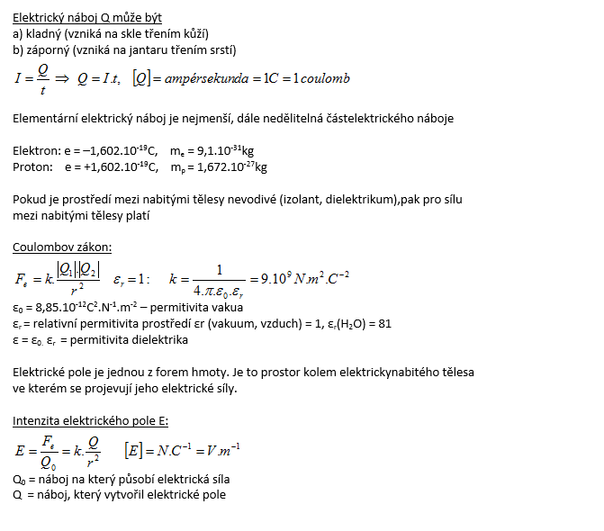
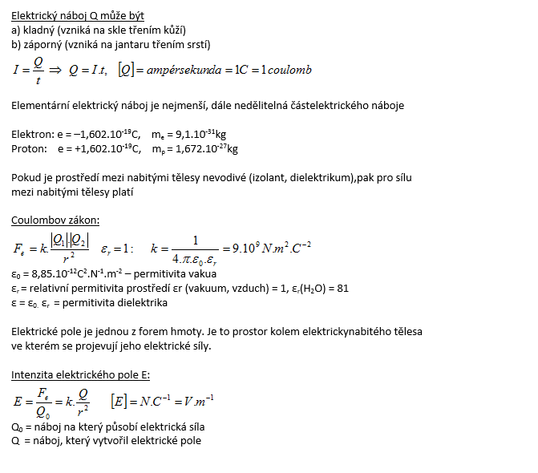

Příklady
Charakterizujte elektrický náboj, Coulombův zákon a elektrické pole.
Řešení: Elektrický náboj Q je skalární fyzikální veličina, která charakterizuje vlastnost těles (částic) vstupovat do elektromagnetické interakce.


Dvě malé kuličky, jedna má náboj Q1 = 40 nC, druhá Q2 = 80 nC, jsou umístěny vedle sebe ve vzdálenosti 1cm. Jakými velkými silami na sebe kuličky působí pokud jsou:
a.) ve vzduchu (εr = 1)
b.) v petroleji (εr = 2,1)
c.) ve vodě (εr = 81) k = 9.109N.m2.C-2
Řešení: Elektrický náboj Q je skalární fyzikální veličina, která charakterizuje vlastnost těles (částic) vstupovat do elektromagnetické interakce.